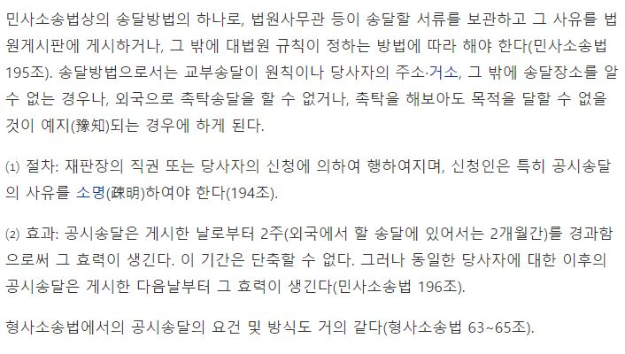
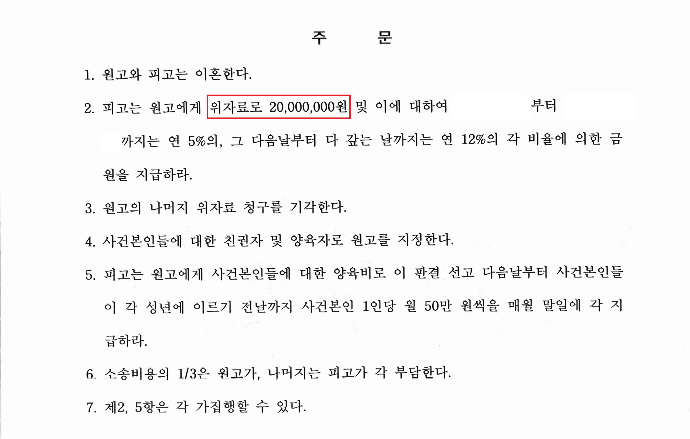

안녕하세요.
법무법인 글로리
대표 변호사 이아무 입니다.
배우자가 집을 나가
오랜 시간 연락도 되지 않고,
어디에 있는지조차 알 수 없는 상황에서
법률상 배우자와 이혼할 수 있을까요?
이혼소송도 원고와 피고가 존재하고,
원고가 접수한 소장이 피고에게 도달되고,
피고가 원고의 청구에 대한
자신의 의견을 답변하면서
소송이 시작되게 되는데요.
위와 같은 경우라면,
피고를 상대로 소장을
접수한다고 하여도,
그 소장이 피고에게
도달할 수가 없는 경우가 발생합니다.
이러한 경우에는
법원에서 정한 송달 절차에 따라
송달 시도를 여러 차례 해 보았음에도,
송달이 되지 않음을
이유로 공시송달을 신청하여
허가를 받아 이혼을 진행할 수 있습니다.
오늘 소개해드릴 사례는
남편의 소재불명이 1년 이상 지속된 상황,
즉 사실상 혼인관계가 파탄 났고
혼인의 실체가 없었던 상황이
지속된 상황에서 가족관계 등록부상으로만
혼인관계로 기재된
법적인 부부관계를 정리하고
싶어 하셨던 분의 사례입니다.
2005년에 혼인신고를 하여
약 14년 동안 법률상 부부로
지낸 원고와 피고는
배우자의 폭언과 폭행,
피고의 무단가출 및 장기간 행방불명,
원고와 사건 본인들을 방치하고 유기한 점,
혼인생활을 지속할 의사가 없는 점
등으로 인하여 이혼을 결심하게 되었습니다.
1. 기본적인 사항
① 혼인 기간 : 약 14년
② 원고 : 주부
피고 : 운송 기사
③ 미성년 자녀 여부 : 2명
이 사건의 피고는 행방불명 상태로
저희가 제출한 소장 및 서면들을
모두 받지 않아 공시송달로
진행하여 마무리한 사건입니다.
공시송달이란
상대방의 송달장소를 알 수 없거나,
상대방에게 소장도 달이 안된 경우,
촉탁을 해도 목적을 달할 수 없을 때
법원이 송달할 서류를 보관해 두었다가
당사자가 나타나면 언제라도
교부할 뜻을 법원 게시장에
게시하는 송달 방법입니다.

2. 판결 결과(화해권고 결정)
피고는 원고에게
위자료 20,000,000 원을 지급하라
사건 본인들에 대한 친권자
및 양육자로 원고를 지정한다.
양육비 사건 본인 1인당 월 50만 원씩 지급하라
라는 판결을 받았습니다.

3. 위와 같은 결과가 나오게 된 원인
위와 같이 원고가 피고의 소재를
파악할 수 없다고 하여
무조건 바로 공시송달로
진행되는 것은 아닙니다.
공시송달로 사건이 진행되는 경우
쌍방 당사자의 주장이나 진술이 없이
일방의 청구만을 가지고 위자료,
친권 및 양육권, 재산분할 등이
결정될 수 있기 때문에,
공시송달로의 진행은
생각보다 까다로운 절차에 의하여 허가됩니다.
물론 여러 가지 방법으로
송달 시도를 해보는 과정에서
상당한 시간이 소요될 수도 있습니다.
또한 공시송달로 진행을 한다고 하더라도,
위자료를 지급하라는 등의 판결이
내려질 수 있는 만큼,
상대가 아무런 항변을
하지 않는다고 하더라도,
원고는 본인이 주장할 수 있는 부분을
적절히 주장 입증할 필요가 있습니다.
이 사건에서는
상대방이 없다고 하더라도,
원고가 위자료를 지급받아야 할 만큼
혼인 파탄의 사유가
피고에게 있다는 점을
적극 주장 입증하여,
청구한 위자료 3천만 원 중
2천만 원에 대한 부분에
대하여 인용판결을 받을 수 있었습니다.